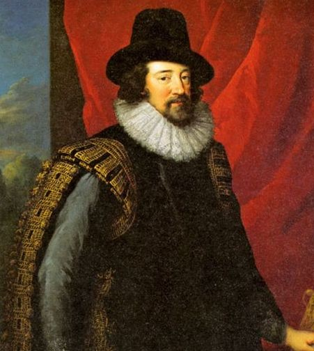

Who Was Francis Bacon?
Francis Bacon (1561–1626) was an English philosopher, statesman, lawyer, essayist, and one of the most important figures in the development of modern ideas about knowledge and scientific inquiry. He is especially famous for his defense of empiricism, systematic observation, experimentation, and inductive reasoning.
Francis Bacon's philosophy challenged intellectual methods that relied too heavily on inherited authority, abstract speculation, and traditional systems of thought. He argued that human beings could improve their understanding of nature by carefully observing the world, collecting evidence, comparing cases, and gradually developing reliable general conclusions.
Although Bacon did not invent the modern scientific method in its complete form, his writings became enormously important in the intellectual history of science. His philosophy encouraged scholars to treat the study of nature as a cooperative and systematic project based upon evidence rather than unquestioned obedience to ancient authorities.
Francis Bacon therefore occupies an important position in the history of modern philosophy, empiricism, epistemology, and the philosophy of science. His famous works, especially Novum Organum, helped shape later discussions about induction, experimentation, scientific institutions, and the limits of human knowledge.
Francis Bacon: Quick Facts
- Full name — Francis Bacon
- Born — 22 January 1561
- Died — 9 April 1626
- Nationality — English
- Philosophical tradition — Early modern philosophy
- Major movement — Empiricism and the Scientific Revolution
- Main subjects — Epistemology, philosophy of science, induction, logic, politics, and ethics
- Known for — The Baconian method and inductive reasoning
- Famous work — Novum Organum
- Major project — The Great Instauration
- Important fictional work — New Atlantis
- Famous concept — The Four Idols of the Mind
Francis Bacon's Early Life and Education

Francis Bacon was born in London in 1561 into a politically prominent English family closely connected with the government of Queen Elizabeth I. His father, Sir Nicholas Bacon, served as Lord Keeper of the Great Seal, while his mother, Anne Cooke Bacon, was highly educated and deeply involved in the intellectual and religious culture of Renaissance England. His upbringing therefore brought him into contact with both learning and power.
Bacon entered Trinity College, Cambridge, at a young age, where he received an education shaped by classical learning and the traditions of scholastic philosophy. He later became dissatisfied with methods that depended too heavily upon inherited authority and abstract disputes. In particular, he questioned whether traditional Aristotelian approaches were producing enough new and useful knowledge about the natural world.
After leaving Cambridge, Bacon travelled to France as part of an English diplomatic mission. This experience exposed him to European politics, government, and the wider intellectual world beyond England. His time abroad also coincided with a period of major political and religious conflict, helping him develop a practical understanding of institutions, power, and the rapidly changing conditions of early modern European society.
Bacon's early life therefore combined classical education, legal training, political experience, and an ambitious interest in philosophical reform. These different influences later appeared throughout his writings, where questions about knowledge were connected with questions about society and human progress. He increasingly came to believe that philosophy should produce discoveries capable of improving the practical conditions of life.
Francis Bacon's Political and Legal Career
Francis Bacon was not only a philosopher but also an important lawyer and political figure in early seventeenth-century England. He spent much of his life working within Parliament, the legal profession, and the royal government. His practical experience of political institutions shaped his understanding of administration, authority, and the ways organized knowledge could be used to improve the management of human affairs.
Bacon gradually rose through several important legal and political offices during the reign of King James I. He served as Solicitor General, Attorney General, Lord Keeper, and eventually Lord Chancellor of England. These positions placed him near the center of political power and gave him direct experience of law, government, conflict, and institutional decision-making during a particularly complex period in English history.
His political career ended dramatically in 1621 after accusations that he had accepted gifts from litigants involved in legal cases. Bacon admitted to accepting such gifts and was convicted by Parliament, leading to his removal from office and temporary imprisonment. Although later accounts have debated aspects of the circumstances, the scandal effectively ended his career at the highest levels of public government.
After his political downfall, Bacon devoted much more of his remaining life to writing and intellectual projects. His experience nevertheless remained important to his philosophy, because he did not imagine knowledge as merely a private pursuit. He envisioned organized communities of investigators, cooperative research, and institutions capable of applying discoveries for practical human benefit and the improvement of society.
Francis Bacon and the Scientific Revolution
Francis Bacon lived during the period of intellectual transformation often called the Scientific Revolution, when inherited European ideas about nature and the universe were increasingly challenged. New work in astronomy, mechanics, medicine, and natural philosophy encouraged scholars to reconsider traditional authorities. The period raised a central question: how could human beings develop more reliable knowledge of nature?
Bacon believed that traditional systems of learning had produced too much argument and too little discovery. Scholars, in his view, often repeated ancient doctrines or defended established philosophical systems without sufficiently investigating the natural world itself. He therefore called for a reform of learning that would give greater importance to observation, evidence, experimentation, and the systematic study of particular phenomena.
His contribution to the Scientific Revolution was primarily philosophical and methodological rather than experimental in the modern scientific sense. Bacon promoted the careful collection, classification, and comparison of observations as foundations for inquiry. He believed investigators should proceed gradually toward general principles instead of beginning with broad assumptions and attempting to force natural phenomena into predetermined theories.
Modern science cannot simply be identified with Bacon's exact proposals, since later scientists developed important mathematical, experimental, and theoretical methods that differed substantially from his program. Yet his demand for systematic investigation became enormously influential. Bacon came to symbolize the ideal of science as a collective and progressive enterprise directed toward discovery, practical knowledge, and human improvement.
What Was Francis Bacon's Philosophy?
Francis Bacon's philosophy was centered on the problem of how human beings can acquire reliable and useful knowledge about reality. He believed that many existing intellectual traditions began with general assumptions and then interpreted experience according to those assumptions. This method, he argued, often prevented genuine discovery because thinkers could become more committed to systems than to the evidence before them.
Bacon proposed a different intellectual approach based upon the investigation of particular phenomena. Instead of beginning primarily with broad theories, philosophers and investigators should carefully observe nature, gather evidence, and compare many different cases. General principles should emerge gradually from disciplined inquiry. This approach reflected Bacon's belief that reliable knowledge requires patience and resistance to premature conclusions.
His philosophy is therefore closely associated with empiricism, particularly because of its emphasis on experience and observation. Bacon himself did not develop empiricism in the same systematic form later associated with John Locke, George Berkeley, and David Hume. Nevertheless, his insistence that inquiry must remain connected with experience helped shape the broader intellectual development of empiricist thought.
Bacon also believed that the human mind contains serious obstacles to knowledge. His famous theory of the Four Idols explained how prejudice, language, habit, social traditions, and philosophical systems can distort human understanding. Philosophy therefore required not only new methods for studying nature but also critical awareness of the psychological tendencies that repeatedly lead human beings toward intellectual error.
Francis Bacon and Empiricism
Francis Bacon is commonly associated with the development of empiricism, the view that experience plays a central role in the acquisition of knowledge. He emphasized the importance of observing the natural world rather than relying exclusively upon abstract reasoning or inherited authority. For Bacon, genuine inquiry had to confront actual phenomena instead of remaining confined within traditional systems of thought.
Bacon believed that investigators should collect observations from many different situations and carefully compare the evidence they obtained. They should examine when a phenomenon appears, when it does not appear, and how it varies under different conditions. This comparative procedure was meant to prevent investigators from drawing conclusions from only a small number of examples or from selecting evidence that merely confirmed prior beliefs.
His empiricism was therefore more demanding than the simple claim that all knowledge comes from the senses. Raw experience alone could be misleading because human beings interpret what they observe through expectations and prejudices. Bacon wanted experience to be organized through a disciplined method capable of correcting error and gradually moving from particular observations toward more reliable forms of general knowledge.
Bacon's emphasis on experience influenced the broader development of the English empiricist tradition, even though later philosophers developed very different theories of the mind and knowledge. Locke, Berkeley, and Hume did not simply follow Bacon's method, but they continued to investigate the relationship between experience and human understanding. Bacon's lasting importance lies partly in making experience central to the reform of inquiry.
Francis Bacon's Theory of Knowledge
Francis Bacon's theory of knowledge begins with a recognition of human intellectual limitations. He believed that the mind naturally tends to make premature judgments, search for patterns that may not genuinely exist, and interpret evidence according to previous expectations. Human intelligence, therefore, does not automatically guarantee truth. Without disciplined methods, even intelligent investigators can repeatedly fall into serious error.
Reliable knowledge consequently requires more than individual brilliance or philosophical speculation. Bacon argued that inquiry must employ methods capable of correcting the ordinary weaknesses of human thinking. Investigators should actively search for evidence that challenges their assumptions rather than merely collecting facts that support preferred conclusions. Knowledge becomes more trustworthy when the process of inquiry is itself self-critical.
Bacon also emphasized the importance of cooperation in the advancement of knowledge. The investigation of nature should not depend entirely upon the isolated genius of a single philosopher. He imagined a long-term collective enterprise in which many investigators could gather observations, conduct experiments, preserve results, and contribute to discoveries that later generations could expand through continued and organized research.
This practical conception of knowledge distinguishes Bacon from traditions focused mainly upon contemplation or theoretical understanding for its own sake. Knowledge should help human beings understand natural processes and increase their capacity to act effectively within the world. His famous association of knowledge with power expressed the idea that understanding nature can expand the possibilities for practical human action and improvement.
Francis Bacon and the Scientific Method
Francis Bacon is frequently described as one of the most important philosophers associated with the development of the scientific method. He argued that investigation should be systematic rather than dependent upon accidental observation or unquestioned speculation. Scientific inquiry needed procedures capable of organizing evidence and reducing the influence of personal prejudice and intellectual habit.
Bacon placed great emphasis on observation and the careful collection of evidence. An investigator should examine phenomena before committing to a preferred explanation and should avoid searching only for facts that confirm an existing theory. This approach was intended to make inquiry more open to correction. Evidence should guide the formation of conclusions rather than merely serving as decoration for assumptions made in advance.
Experimentation also occupied an important place in Bacon's vision of inquiry. By actively investigating natural processes, rather than simply observing them passively, researchers could reveal relationships hidden from ordinary experience. Experiments could create conditions in which phenomena became easier to study and compare. Bacon therefore saw investigation as an active process directed toward discovering the structures and causes of nature.
The modern scientific method is considerably more complex than Bacon's own proposals and includes mathematical modelling, hypothesis testing, prediction, statistical analysis, and many specialized techniques. Bacon did not create modern science by himself, nor did all major scientists follow his exact method. Yet his insistence on systematic evidence and critical investigation remains central to his historical importance in the philosophy of science.
What Was Francis Bacon's Method of Induction?
Induction is one of the central ideas associated with Francis Bacon's philosophy of scientific inquiry. Inductive reasoning moves from particular observations toward more general conclusions about nature. Bacon believed that carefully organized induction could help investigators discover patterns, relationships, and possible causes without beginning from universal principles that had simply been accepted on traditional authority.
Bacon did not support a simple form of induction in which someone observes several examples and immediately announces a universal law. He believed that rapid generalization was one of the major dangers of ordinary reasoning. A small number of observations might accidentally support a conclusion while many neglected cases could contradict it. Inquiry therefore required a much more patient and disciplined process of collecting and testing evidence.
The Baconian method called for the careful comparison of different kinds of cases. Investigators should consider instances in which a phenomenon occurs, instances in which it does not occur, and situations in which it appears with greater or lesser intensity. These comparisons could help eliminate explanations that failed to account for important differences and guide inquiry toward more plausible accounts of natural processes.
Through this gradual process, Bacon hoped researchers could move beyond guesswork and eliminate incorrect explanations step by step. His method was not identical to modern scientific induction, and later philosophers raised important questions about whether induction can logically justify universal laws. Nevertheless, Bacon's attempt to discipline generalization through systematic evidence made induction a central element of his philosophical legacy.
Induction vs Deduction in Francis Bacon's Philosophy
Francis Bacon's emphasis on induction is often contrasted with deductive reasoning. Deduction generally begins with general principles or accepted premises and then moves toward conclusions about particular cases. Bacon believed that much traditional philosophy relied too heavily on deduction from assumptions that had not themselves been adequately established through careful investigation of nature and experience.
Bacon did not reject reasoning or logical argument as such. His criticism was directed primarily against the careless construction of broad theories without sufficient empirical support. General conclusions, he argued, should emerge gradually from a systematic investigation of evidence rather than being imposed upon nature in advance by philosophers who were already committed to a preferred intellectual system.
Induction and deduction later became important parts of modern scientific reasoning, although science does not operate through only one method. Investigators may move between observations, hypotheses, predictions, experiments, mathematical models, and general theories. Bacon's particular importance lies in his insistence that inquiry should remain closely accountable to evidence rather than relying entirely upon abstract argument or inherited philosophical authority.
Bacon's historical contribution was therefore his powerful warning against beginning the investigation of nature with unsupported general assumptions. He wanted philosophical and scientific reasoning to proceed through a disciplined engagement with the natural world. His own inductive method was more elaborate than simple generalization from repeated examples, involving comparison, exclusion, and a gradual ascent from particular observations toward increasingly general axioms.
Francis Bacon's Novum Organum
Novum Organum, published in 1620, is one of Francis Bacon's most important philosophical works and a central statement of his proposed method for investigating nature. Its Latin title means "New Instrument," indicating Bacon's ambition to provide a new intellectual tool for the advancement of knowledge. The work formed a major part of his larger project for the renewal of learning, known as the Great Instauration.
The title deliberately referred to Aristotle's Organon, the influential collection of logical works that had long shaped philosophical education. Bacon did not simply deny the value of all earlier logic, but he believed that traditional methods were insufficient for discovering genuinely new knowledge about nature. He therefore sought a method directed toward discovery rather than merely toward organizing or defending propositions already accepted.
In Novum Organum, Bacon criticizes several intellectual habits that can lead the mind toward false conclusions. He introduces the famous Four Idols, recurring sources of error arising from human nature, individual habits, language, and established philosophical systems. The work therefore combines a positive method for inquiry with a critical examination of the obstacles that can distort observation and reasoning.
The work also presents Bacon's vision of a more systematic form of induction. Instead of rushing from a small number of observations to broad theories, investigators should collect evidence carefully, compare cases, and use exclusion to eliminate inadequate explanations. Bacon hoped that knowledge could advance step by step from particular phenomena toward increasingly reliable general principles about the structure and causes of the natural world.
What Are Francis Bacon's Four Idols?
Francis Bacon's Four Idols are among the best-known concepts in his philosophy. They describe recurring tendencies that prevent human beings from seeing reality clearly and lead the mind toward error. Bacon regarded the identification of these obstacles as essential because the search for knowledge cannot succeed merely by collecting facts if the investigator's own habits of thought continue to distort the interpretation of those facts.
Bacon used the term "idols" to describe false notions, misleading assumptions, and habits of thought that occupy the human mind. These obstacles are not simply accidental mistakes made by careless individuals. Some arise from characteristics shared by human beings, while others develop through personal experience, language, education, social communication, and the influence of established intellectual traditions.
The four categories are the Idols of the Tribe, the Idols of the Cave, the Idols of the Marketplace, and the Idols of the Theatre. Together they provide Bacon with a systematic account of several different ways in which judgment can become unreliable. The first two concern more deeply rooted features of human nature and individuality, while the latter two emphasize social and intellectual influences.
Bacon believed that recognizing these intellectual obstacles was an essential part of the search for knowledge. Before investigators can understand nature accurately, they must also examine the ways their own minds, languages, and traditions may distort what they observe. The doctrine of the Idols therefore makes Bacon's philosophy not only a theory of scientific discovery but also an early and influential program of systematic intellectual self-criticism.
Francis Bacon's Idols of the Tribe
The Idols of the Tribe are errors that arise from characteristics shared by human beings in general. Bacon believed that the human mind does not simply receive reality exactly as it is. Human perception and reasoning can introduce expectations, imagined patterns, and distortions into experience, causing people to mistake the structure imposed by their own minds for the actual structure of the natural world.
People often search for more order, regularity, and symmetry than actually exists in nature. The mind may quickly interpret events according to familiar patterns even when the available evidence is incomplete or ambiguous. Bacon also warned against the tendency to give excessive importance to evidence that confirms an existing view while failing to give equal attention to contrary or negative cases that might challenge the preferred explanation.
Bacon's discussion has often been compared with later concerns about cognitive bias, although his philosophy belongs to a very different historical period. Human beings may naturally prefer information that supports previous expectations and may generalize too quickly from a limited number of observations. The central Baconian insight is that ordinary intelligence alone does not guarantee objectivity, because the mind itself can systematically contribute to error.
The solution is therefore not to assume that human perception is perfectly reliable. Instead, investigators should develop methods through which observations can be checked, compared, repeated, and critically examined. Bacon's broader program sought to supplement the weaknesses of ordinary human perception through disciplined inquiry, carefully designed experiments, and procedures that force investigators to consider evidence capable of challenging their first conclusions.
Francis Bacon's Idols of the Cave
The Idols of the Cave refer to errors produced by an individual's particular experiences, habits, education, personality, and intellectual preferences. Each person, in Bacon's metaphor, lives within a kind of private mental cave through which the wider world is interpreted. Unlike the Idols of the Tribe, these distortions vary significantly from one individual to another.
People interpret the world through the limited experiences that have shaped them. A scholar may become excessively attached to one theory, one discipline, one method, or one intellectual tradition and begin to see every problem through that preferred framework. Personal training can therefore become an intellectual limitation when familiarity with one approach prevents a thinker from considering evidence or methods that lie outside the boundaries of that approach.
These personal limitations can produce selective attention. A person may notice mainly the evidence that fits a preferred explanation while failing to consider other possibilities that are equally important. Bacon was concerned with the way intellectual preferences can quietly shape judgment before a person becomes consciously aware of their influence. The search for knowledge therefore requires more than learning facts; it requires discipline toward one's own habits of mind.
Bacon consequently encouraged intellectual openness and methodological restraint. Investigators should recognize that personal habits, education, temperament, and preferences can influence judgment without automatically making those influences visible. By comparing evidence, consulting other investigators, and testing explanations against phenomena rather than merely personal conviction, inquiry can become less dependent upon the limitations of any individual observer.
Francis Bacon's Idols of the Marketplace
The Idols of the Marketplace arise from language and social communication. Bacon believed that words are indispensable to human thought, but they can also confuse reasoning when people assume that every word corresponds clearly to a real and well-defined thing. Language develops through ordinary social use and may therefore carry vague distinctions, misleading assumptions, and inherited confusions into philosophical and scientific inquiry.
Language can encourage vague or misleading categories. People may use the same word in different ways, inherit concepts whose meaning is unclear, or become trapped in arguments produced mainly by verbal confusion. A dispute may appear to concern reality while actually depending upon an unresolved disagreement about the meaning of the terms being used. Bacon therefore regarded careless language as a serious obstacle rather than a merely superficial problem.
Bacon's criticism remains especially relevant to philosophy because many philosophical disagreements involve questions about language and the meaning of concepts. Scientific investigation can also be affected when familiar words encourage investigators to assume that a vague category already represents a genuine division within nature. Words are useful instruments, but Bacon warned that they can also exercise power over the minds of those who mistakenly believe they control them.
His analysis of the Idols of the Marketplace therefore emphasizes the importance of defining concepts carefully and ensuring that language does not replace direct investigation of reality. Philosophers and scientists must examine whether their terminology genuinely clarifies a problem or merely creates the appearance of understanding. Bacon's broader lesson is that intellectual precision requires critical attention not only to facts but also to the words used to describe them.
Francis Bacon's Idols of the Theatre
The Idols of the Theatre refer to errors created by established philosophical systems, doctrines, and methods of argument. Bacon compared such systems to theatrical performances because they can present impressive, coherent, and internally persuasive pictures of reality without necessarily corresponding accurately to nature. A theory may therefore become intellectually attractive precisely because of its elegance rather than because of adequate evidence.
Bacon was particularly critical of unquestioned respect for ancient authorities. He believed that scholars should not accept an idea simply because it had been defended by a famous philosopher or preserved through a long intellectual tradition. Respect for earlier thinkers was compatible with criticism, but intellectual authority should never become a substitute for renewed investigation of the natural world and the evidence available to later generations.
A philosophical system can become so powerful that later thinkers interpret all evidence through its established categories. Bacon regarded this as dangerous because intellectual traditions may discourage the discovery of facts that do not fit accepted theories. The Idols of the Theatre therefore concern not only individual prejudice but also the collective authority of systems capable of shaping education, argument, and the standards by which evidence is judged.
The Idols of the Theatre consequently express Bacon's broader demand for intellectual independence and methodological renewal. Authority should be examined critically, and theories should remain open to correction when evidence challenges them. Bacon did not imagine that investigators could simply escape every intellectual influence, but he believed that progress required conscious resistance to systems that claimed final authority over questions nature had not yet settled.
Francis Bacon's Criticism of Traditional Philosophy
Francis Bacon believed that much traditional philosophy had become too concerned with argument, classification, and verbal debate. He criticized intellectual systems that could produce elaborate explanations while generating relatively little new knowledge about nature. For Bacon, the value of a method depended partly upon its capacity to lead investigators toward discovery and practical results, rather than merely toward increasingly sophisticated commentary on inherited doctrines.
His criticism was especially directed toward forms of scholastic philosophy that relied heavily on inherited Aristotelian concepts and established methods of disputation. Bacon believed that intellectual respect for the past should not prevent new investigation. Earlier systems had to be judged by their ability to advance knowledge, not simply preserved because they possessed institutional prestige within universities and learned traditions.
Bacon did not simply argue that ancient thinkers were worthless or that all previous learning should be discarded. Rather, he believed that knowledge should progress through the accumulation of new observations and discoveries. Later generations possessed access to experiences unavailable to earlier thinkers and should therefore be capable of extending human understanding beyond inherited systems instead of treating the intellectual achievements of antiquity as final.
Bacon's philosophy consequently represents an important early modern shift toward the ideal of intellectual progress. Knowledge should not merely preserve the achievements of the past; it should also create methods capable of producing future discoveries. His ambition was to reform the instruments of inquiry themselves so that human beings could systematically enlarge their understanding of nature across generations through organized and cumulative investigation.
Francis Bacon and Aristotle
Francis Bacon's relationship with Aristotle is often simplified as complete opposition, but the historical situation is more complex. Bacon criticized the dominance of Aristotelian scholasticism in European education and objected to methods that he believed produced argument without sufficient discovery. His principal target was therefore not simply Aristotle as an individual philosopher but the powerful intellectual traditions that had developed around Aristotelian authority.
Aristotle's logical works had long provided a major framework for philosophical education. Bacon believed that traditional syllogistic reasoning could be useful in certain contexts for organizing and presenting knowledge, but he regarded it as insufficient for discovering the fundamental principles of nature. The problem, in his view, was beginning with concepts and axioms that had themselves not been adequately established through systematic investigation.
Bacon's Novum Organum, or "New Instrument," deliberately suggested the need for an alternative intellectual tool. The title referred to Aristotle's Organon while proposing a different method for the interpretation of nature. Bacon wanted investigation to begin more directly with the organized study of phenomena and then move gradually toward general conclusions through comparison, exclusion, experimentation, and carefully controlled reasoning.
The contrast between Bacon and Aristotle therefore became historically symbolic. Bacon came to represent the demand for new methods of discovery and the ideal of scientific progress, while Aristotle represented the immense authority of the classical philosophical tradition that Bacon believed modern investigators needed to examine critically. The contrast should nevertheless not obscure the fact that Bacon's own project remained deeply engaged with the philosophical problems inherited from earlier traditions.
Francis Bacon's Philosophy of Science
Francis Bacon is one of the foundational figures in the history of the philosophy of science. He asked fundamental questions about how scientific knowledge should be acquired, organized, tested, and used. His importance lies particularly in his attempt to connect a theory of knowledge with a practical program for the systematic investigation of nature and the long-term advancement of human understanding through collective intellectual effort.
Bacon believed that the investigation of nature required a systematic method. Scientific knowledge should not depend entirely upon isolated observations, personal genius, or the authority of individual thinkers. Evidence had to be collected in an organized and critical manner, while the investigator also needed procedures capable of correcting the weaknesses of ordinary perception, language, and premature generalization that could otherwise distort the process of inquiry.
Bacon also emphasized the practical purpose of science. Understanding nature could allow human beings to develop new technologies, medicines, techniques, and other practical improvements. For him, knowledge was not valuable only as an object of contemplation; it could increase humanity's capacity to act effectively within the natural world. This connection between understanding and practical benefit became a central feature of his broader philosophical program.
His philosophy additionally encouraged the institutional development of scientific inquiry. Bacon imagined communities of investigators working together, gathering observations, sharing discoveries, and pursuing specialized forms of research. Although modern science did not develop by simply following his exact method, his vision of collaborative, organized, and cumulative inquiry became an important part of the historical image of the scientific enterprise.
What Did Francis Bacon Mean by Knowledge Is Power?
Francis Bacon is frequently associated with the phrase "knowledge is power." The expression is commonly used to summarize his belief that understanding the world can increase humanity's ability to act effectively within it. Bacon closely connected knowledge of natural causes with the capacity to produce practical results, arguing that the advancement of learning should contribute to the benefit and improvement of human life.
For Bacon, knowledge of nature was not merely valuable because it satisfied intellectual curiosity. Understanding natural causes and processes could make it possible to develop practical techniques and inventions. Scientific inquiry could therefore contribute to improved agriculture, medicine, technology, and other areas in which greater understanding of the natural world might expand the range of effective human action.
This connection between knowledge and practical power was central to Bacon's broader intellectual project. He wanted philosophy and natural inquiry to produce discoveries rather than remain limited to abstract contemplation. His ideal was a progressive form of knowledge in which discoveries could generate useful works, while successful practical results could in turn demonstrate the value and reliability of the methods through which those discoveries had been achieved.
Bacon's understanding of knowledge also raises enduring philosophical questions. Increased knowledge can create new forms of technological and social power, but the possession of greater power does not itself determine how that power should be used. Modern readers therefore encounter in Bacon both an influential vision of scientific progress and a continuing problem concerning the ethical responsibilities that accompany humanity's expanding ability to transform the natural world.
Francis Bacon's Great Instauration
The Great Instauration was Francis Bacon's ambitious project for the renewal and reorganization of human knowledge. He believed that existing systems of learning required fundamental reform if humanity was to make substantial progress in understanding nature. The project extended far beyond the proposal of one scientific technique and represented Bacon's attempt to redesign the overall structure, method, and purpose of intellectual inquiry.
Bacon planned a large intellectual program involving the classification of knowledge, the development of improved methods of investigation, the collection of extensive natural and experimental histories, and the eventual creation of a more complete philosophy of nature. He described the project as consisting of several interconnected parts. Much of this vast undertaking remained unfinished at his death, but its ambition reveals the extraordinary scale of his philosophical vision.
The ambition of the Great Instauration demonstrates that Bacon was not merely proposing a new procedure for individual scientists. He wanted to transform the overall relationship between human beings, knowledge, and the natural world. Inquiry had to become more organized, collaborative, practical, and capable of producing discoveries that could accumulate across generations rather than disappearing with the death of individual investigators.
His vision was deeply connected with the idea of intellectual progress. Human knowledge could grow through organized effort, while future generations could build upon observations and discoveries made by earlier investigators. Bacon therefore helped popularize a powerful early modern ideal: knowledge is not necessarily a fixed inheritance from the past but a collective enterprise capable of continuous expansion through improved methods and sustained investigation.
Francis Bacon's New Atlantis
New Atlantis is an unfinished fictional work published after Francis Bacon's death. The work describes an imagined society called Bensalem and presents one of Bacon's most famous visions of organized scientific research. Rather than merely presenting an abstract philosophical argument, Bacon uses fiction to imagine how a society might organize knowledge, investigation, discovery, and the practical application of scientific understanding.
At the center of this imagined society is an institution commonly called Salomon's House. Its members investigate nature, conduct experiments, collect knowledge, and develop practical inventions for the benefit of society. The institution represents Bacon's ideal of organized inquiry in which different investigators perform specialized tasks and contribute to a larger collective project directed toward the discovery and practical use of knowledge.
The scientific institution described in New Atlantis has often been interpreted as an early vision of the modern research institute. Bacon imagined scientific knowledge as a collective activity involving specialization, cooperation, careful organization, and long-term investigation. Although modern scientific institutions differ greatly from his fictional model, the work became historically important for expressing the ideal that knowledge can advance through coordinated communities rather than isolated individual thinkers alone.
The work also raises questions about the relationship between science, society, secrecy, power, and ethics. Bacon's imagined scientific community possesses extraordinary knowledge and considerable control over how discoveries are communicated and applied. For this reason, New Atlantis is important not only for the history of science but also for political and social philosophy, inviting reflection on who should possess knowledge and how powerful discoveries should serve society.
Francis Bacon's Essays and Moral Philosophy
Francis Bacon is also famous for his Essays, a collection of relatively concise writings on practical subjects including truth, friendship, ambition, power, marriage, study, revenge, and human conduct. These works reveal a different dimension of his intellectual life from his writings on induction and natural philosophy. Bacon examines the practical difficulties of human relationships and the motives that influence behavior within society and political life.
Bacon's essays are different in style from his major philosophical works on science and method. They are often concise, aphoristic, and deliberately memorable, presenting observations in a compressed form. Rather than constructing a single systematic theory of morality, Bacon frequently considers particular aspects of human conduct and judgment, offering reflections shaped by his extensive experience of law, politics, administration, and the competitive realities of public life.
His moral reflections frequently examine human motivation. Bacon was interested in ambition, self-interest, fear, desire, reputation, and the difficulties of living within political and social institutions. His essays often display a realistic attention to the gap between moral ideals and actual human behavior. They therefore contribute to a tradition of practical moral reflection concerned with how people act when confronted by power, opportunity, rivalry, and changing circumstances.
The essays reveal another important dimension of Bacon's thought: philosophy can investigate not only the natural world but also the complexities of human behavior and social life. His writings therefore contributed to both philosophical and literary traditions. The enduring appeal of the Essays lies partly in their ability to combine intellectual reflection with practical observation about the motives, ambitions, weaknesses, and recurring problems of human beings.
Francis Bacon's Views on Religion
Francis Bacon lived in a deeply religious period, and his writings often addressed the relationship between religious belief and the investigation of nature. He did not generally present scientific inquiry as inherently opposed to religion. Instead, his intellectual project attempted to distinguish the proper investigation of natural phenomena from theological disputes and warned against confusing religious interpretation with methods designed for studying the physical world.
Bacon distinguished different forms and domains of knowledge and believed that human beings should be careful not to misuse religious texts as simple substitutes for scientific investigation. Questions about natural processes required careful attention to the natural world itself, including observation and experiment. His position therefore supported the development of natural inquiry while remaining situated within a worldview profoundly shaped by Christian belief and the religious concerns of early modern Europe.
His approach contributed to the broader early modern discussion about the relationship between faith and reason. Bacon believed that natural philosophy and religion could become harmful to one another when their distinct purposes and methods were confused. The investigation of natural processes required empirical inquiry, while religious thought addressed theological and spiritual questions that could not simply be resolved through experiments concerning the physical world.
Bacon's position should therefore not be reduced to a modern idea of complete separation between science and religion. His intellectual world remained profoundly shaped by religious assumptions, and he regarded the study of nature as compatible with broader moral and religious concerns. His importance lies partly in his effort to protect the investigation of nature from being constrained by inappropriate theological interpretation while avoiding the claim that science itself made religious questions meaningless.
Francis Bacon's Main Philosophical Ideas
1. Knowledge Should Begin with Experience
Bacon believed that reliable knowledge of nature must remain closely connected with observation and experience. Philosophers should not depend entirely upon abstract speculation or inherited authority when investigating the physical world. Experience, however, had to be organized and critically examined because ordinary observation could itself be distorted by expectation, language, prejudice, and the natural limitations of human perception.
2. Induction Should Be Systematic
General conclusions should not be reached too quickly. Bacon proposed a more disciplined form of induction in which investigators compare observations, examine differences between cases, and gradually eliminate incorrect explanations. His method was therefore more complex than merely counting repeated examples, because it attempted to use negative evidence and exclusion to control the human tendency toward premature and overly confident generalization.
3. The Mind Contains Sources of Error
The Four Idols explain how human beings can become trapped by shared biases, personal habits, misleading language, and powerful philosophical traditions. Intellectual progress requires recognizing these obstacles because error can arise not only from a lack of information but also from the way the human mind interprets information. Bacon therefore made the criticism of prejudice and intellectual distortion an essential preliminary stage in the disciplined search for knowledge.
4. Science Should Produce New Knowledge
Bacon criticized intellectual traditions that repeatedly commented on existing authorities without generating significant discoveries. Knowledge should grow through investigation and remain open to future correction. He believed that the purpose of an improved method was not simply to create better arguments but to make possible discoveries and practical works that earlier methods had failed to produce, allowing human understanding to advance beyond the limits of inherited learning.
5. Knowledge Has Practical Value
Understanding nature can increase human ability to act within the world. Bacon believed that scientific knowledge could contribute to medicine, technology, agriculture, and other practical improvements. This did not mean that truth was valuable only when immediately useful, but it did mean that genuine knowledge should possess the potential to produce effects and works that demonstrate a deeper understanding of natural causes and processes.
6. Scientific Inquiry Should Be Cooperative
Bacon imagined the advancement of knowledge as a collective project. Communities of researchers could collect evidence, share discoveries, and develop specialized forms of investigation that no single person could easily achieve alone. This institutional vision became one of the most influential aspects of Bacon's legacy, helping establish the ideal of science as an organized, cumulative, and cooperative enterprise extending across generations of investigators.
Francis Bacon and René Descartes
Francis Bacon and René Descartes were both major early modern philosophers who sought new foundations for knowledge. Both criticized important aspects of traditional scholastic philosophy, but they developed significantly different approaches to the problem of reliable inquiry. Their work became historically important because each attempted to reform the methods through which human beings move from uncertainty and inherited opinion toward more dependable knowledge.
Bacon emphasized observation, experimentation, the collection of evidence, and a gradual form of induction. Descartes placed greater emphasis on reason, methodological doubt, and the search for clear and certain foundations from which knowledge could be systematically built. Their contrast therefore concerns not simply different personalities but two influential conceptions of how philosophical inquiry should begin and what kind of method can provide reliable intellectual progress.
The contrast between Bacon and Descartes is often used to illustrate the broader historical difference between empiricism and rationalism. Empiricists generally emphasize the importance of experience in knowledge, while rationalists give a more central role to reason and principles not derived directly from sensory experience. The distinction should not, however, erase the complexity of either philosopher's actual method or intellectual project.
Despite their differences, both philosophers contributed decisively to the transformation of European thought. Each believed that inherited methods were insufficient and that philosophy required a more reliable approach to knowledge. Bacon's emphasis on empirical investigation and Descartes's emphasis on methodological certainty helped establish two major directions within early modern philosophy whose interaction continued to shape later debates about science, reason, and experience.
Francis Bacon and John Locke
Francis Bacon is often regarded as an important predecessor of the English empiricist tradition later developed by John Locke. Both philosophers emphasized the importance of experience in understanding human knowledge and challenged the assumption that traditional authority alone could determine what people should believe. Their shared historical importance lies partly in the movement away from unquestioned inherited doctrines toward more critical investigation of evidence and the conditions of knowledge.
Their philosophical projects were nevertheless quite different. Bacon concentrated heavily on methods for investigating nature and on the institutional reform of learning, while Locke developed a detailed philosophical account of the origins, contents, and limits of human ideas and knowledge. Bacon was primarily concerned with improving the methods through which discoveries could be made, whereas Locke examined more directly how the human mind acquires and processes ideas.
Bacon's criticism of intellectual prejudice and inherited assumptions also has important similarities with Locke's broader challenge to unexamined authority. Both thinkers insisted that belief should not be accepted merely because it had been transmitted by tradition. At the same time, their approaches differed in focus: Bacon developed a program for natural investigation, while Locke produced a systematic philosophical analysis of understanding, perception, and human knowledge.
Together, Bacon and Locke became important figures in the history of British empiricism and early modern philosophy. Their work contributed to later debates concerning perception, knowledge, science, reason, and the limits of human understanding. Bacon's methodological emphasis on experience helped establish an intellectual direction that Locke and later philosophers developed into increasingly detailed theories of the mind and the sources of human knowledge.
Francis Bacon and David Hume
David Hume belonged to a later stage of the British empiricist tradition, but his philosophy raised serious questions about the problem of induction that remain relevant to Bacon's intellectual legacy. Bacon had sought a disciplined method through which repeated and carefully organized observations could lead toward increasingly reliable general knowledge. Hume later examined whether such movement from observed experience to expectations about the unobserved can be given a purely logical justification.
Bacon believed that careful observation and systematic comparison could gradually lead toward reliable general knowledge about nature. Hume, however, asked what justifies the expectation that patterns observed repeatedly in the past will continue in the future. The fact that one event has regularly followed another does not, by logical necessity, prove that the same relationship must continue beyond the experiences already observed by human beings.
Hume's problem of induction showed that empirical reasoning contains deep philosophical difficulties. Observing repeated events does not logically guarantee that the same relationship will always continue. Human beings nevertheless make expectations about the future and rely upon causal regularities in practical life and scientific investigation. Hume therefore transformed a methodological question into a profound philosophical problem concerning the justification and limits of induction.
The comparison demonstrates the continuing importance of Bacon's questions. Bacon helped make the problem of reliable empirical inquiry central to modern philosophy, while Hume later investigated the logical foundations and limitations of reasoning based upon experience. Their relationship illustrates how a philosophical method can generate new problems: the attempt to establish reliable induction eventually led philosophers to ask whether induction itself could be rationally justified.
Francis Bacon's Influence on Empiricism
Francis Bacon's influence on empiricism was especially important at the level of intellectual method. He argued that knowledge should be grounded in the investigation of experience rather than accepted simply because it had been inherited from authority. Bacon did not develop the same detailed theory of perception and ideas later found in British empiricists, but his emphasis on observation helped establish an important direction within the development of English philosophy.
Later British empiricists developed more systematic theories concerning sensation, perception, ideas, and the operations of the human mind. Nevertheless, Bacon's earlier demand for intellectual reform helped create an environment in which experience became increasingly central to philosophical debates about knowledge. His project challenged the assumption that abstract systems alone could reveal the structure of reality without sustained attention to the evidence supplied by nature.
His theory of the Four Idols also contributed to the empiricist demand for critical examination. Experience itself must be interpreted carefully because the human mind can distort observations through expectation, language, personal prejudice, and intellectual tradition. Bacon therefore did not advocate a naïve belief that sensory experience automatically provides truth; he wanted experience to be organized, tested, compared, and protected against systematic sources of error.
Bacon consequently remains historically important as a philosopher who helped make empirical investigation central to discussions about the growth of human knowledge. His influence was methodological rather than identical to the later philosophical theories of empiricism developed by Locke, Berkeley, and Hume. Yet the broader Baconian demand that inquiry remain accountable to experience became one of the defining features of the empiricist tradition and modern scientific thought.
Francis Bacon's Influence on Modern Science
Francis Bacon's influence on modern science has been both practical and symbolic. His writings promoted the idea that scientific knowledge should advance through organized investigation rather than through permanent reliance on ancient authority. Bacon became one of the most recognizable philosophical representatives of the belief that systematic observation, experimentation, and the critical testing of assumptions are essential to the continuing advancement of human knowledge.
His vision of cooperative scientific research influenced later discussions about scientific societies and institutions. The Royal Society of London, founded after Bacon's death, became strongly associated with the broader Baconian ideal of experimental, collective, and useful inquiry. This does not mean that the institution simply implemented Bacon's complete philosophical program, but his vision of collaborative research formed an important part of his later scientific reputation and cultural influence.
Modern science does not follow Bacon's proposed inductive method exactly. Scientific practice includes mathematics, theoretical models, hypotheses, experiments, predictions, statistical reasoning, and many forms of deduction alongside empirical observation. Historians and philosophers of science therefore generally distinguish Bacon's actual seventeenth-century method from the far more complex procedures used by contemporary scientific disciplines.
Nevertheless, Bacon remains one of the most important philosophical figures associated with the ideal that claims about nature should be tested against systematic observation and evidence. His enduring significance lies less in the claim that modern scientists literally follow every step of his method and more in his powerful defense of intellectual reform, organized inquiry, experimental investigation, and the possibility of cumulative progress in human understanding.
Francis Bacon's Influence and Legacy
Francis Bacon's legacy extends across philosophy, science, literature, politics, and the history of ideas. He became one of the central symbols of the transition toward modern methods of scientific and intellectual inquiry. Although the history of modern science cannot be explained simply as the triumph of Bacon's exact method, his writings gave powerful expression to the ideal that knowledge should advance through systematic investigation rather than unquestioned tradition.
His influence can be seen in the development of empiricism, the philosophy of science, scientific institutions, and modern ideas about intellectual progress. Bacon's demand for evidence remains closely connected with contemporary ideals of critical investigation, even though modern scientific practice employs methods far more varied than those available in the seventeenth century. His philosophical importance therefore lies partly in establishing enduring questions about method, evidence, discovery, and the correction of intellectual error.
His literary influence was also significant. Bacon's essays became important works in the English essay tradition, while New Atlantis influenced later discussions about science, technology, research institutions, and the social organization of knowledge. His writings demonstrate an unusual range of interests, moving between natural philosophy, political life, law, moral reflection, literary style, and ambitious proposals for the collective advancement of human understanding.
Bacon's philosophy continues to matter because he asked a question that remains fundamental: how can human beings develop methods that allow them to move beyond prejudice and produce increasingly reliable knowledge about reality? His answer emphasized disciplined experience, criticism of intellectual error, organized investigation, and the possibility of progress through collective effort. That combination secured his enduring place in the history of philosophy and science.
Francis Bacon's Philosophy Explained Simply
Francis Bacon believed that people should not simply accept ideas because famous thinkers believed them. Instead, human beings should investigate the world carefully and allow evidence to challenge their previous assumptions.
- How should we learn about nature? By observing, comparing, experimenting, and collecting evidence.
- What is induction? It is the process of moving from particular observations toward more general conclusions.
- What are the Four Idols? They are major sources of intellectual error created by human nature, personal habits, language, and traditional systems.
- Why did Bacon criticize traditional philosophy? Because he believed it often repeated old arguments instead of producing new discoveries.
- Why is knowledge important? Knowledge can help human beings understand and influence the natural world in practical ways.
Why Is Francis Bacon Important in the History of Philosophy?
Francis Bacon is important because he helped transform the way philosophers thought about knowledge. He challenged the idea that intellectual progress could come primarily from the interpretation of established authorities and argued for systematic investigation.
His philosophy made experience, observation, and experimentation central to discussions about the acquisition of knowledge. This helped prepare the intellectual environment in which later empiricism and modern science developed.
Bacon also introduced a powerful analysis of intellectual bias through the Four Idols. His recognition that human beings can distort reality through psychological habits and language remains highly relevant to modern discussions of critical thinking.
Most importantly, Bacon helped establish the modern ideal of progressive knowledge. Human understanding is not fixed; it can grow when investigators develop better methods, cooperate with one another, and remain willing to correct previous errors.
Frequently Asked Questions About Francis Bacon
Who was Francis Bacon?
Francis Bacon was an English philosopher, statesman, lawyer, and writer who lived from 1561 to 1626. He is famous for his contributions to empiricism, inductive reasoning, the philosophy of science, and the development of modern ideas about scientific investigation.
What is Francis Bacon famous for?
Francis Bacon is famous for promoting systematic observation, experimentation, inductive reasoning, and the reform of human knowledge. His best-known philosophical work is Novum Organum, which contains his discussion of the scientific method and the Four Idols.
What was Francis Bacon's philosophy?
Francis Bacon's philosophy emphasized empiricism and the systematic investigation of nature. He argued that reliable knowledge should be developed through observation, evidence, experimentation, and careful induction rather than unquestioned reliance on traditional authority.
What is the Baconian method?
The Baconian method is an approach to investigation associated with Francis Bacon. It emphasizes the collection and comparison of observations and attempts to move gradually from particular evidence toward more reliable general conclusions.
What are Francis Bacon's Four Idols?
Francis Bacon's Four Idols are the Idols of the Tribe, the Cave, the Marketplace, and the Theatre. They represent major sources of error arising from human nature, individual habits, language, and established intellectual systems.
What is Novum Organum?
Novum Organum is Francis Bacon's major philosophical work published in 1620. It proposes a new method for investigating nature and criticizes intellectual habits that prevent human beings from acquiring reliable knowledge.
Was Francis Bacon an empiricist?
Yes. Francis Bacon is commonly associated with the development of empiricism because he emphasized the importance of experience, observation, and evidence in the acquisition of knowledge about the natural world.
Did Francis Bacon invent the scientific method?
Francis Bacon did not invent the complete modern scientific method as it is practiced today. However, he made an important philosophical contribution by promoting systematic observation, experimentation, and inductive investigation.
What did Francis Bacon mean by induction?
Induction is the process of moving from particular observations toward more general conclusions. Bacon believed that induction should be systematic and should involve comparing different cases rather than making quick generalizations from a small number of examples.
What did Francis Bacon mean by knowledge is power?
The phrase expresses the idea that knowledge can increase human power by allowing people to understand natural processes and use that understanding for practical purposes such as technological and social improvement.
What is Francis Bacon's New Atlantis about?
New Atlantis is an unfinished fictional work describing an imagined society with an advanced institution dedicated to scientific research. The work presents Bacon's vision of cooperative, organized, and socially useful scientific inquiry.
How did Francis Bacon influence modern science?
Francis Bacon influenced modern science by promoting the importance of systematic evidence, experimentation, intellectual cooperation, and the idea that knowledge should progress through continued investigation rather than permanent reliance on inherited authority.
What is the difference between Francis Bacon and Descartes?
Francis Bacon emphasized observation and empirical investigation, while René Descartes emphasized reason and methodological doubt. Their different approaches became historically associated with the contrast between empiricism and rationalism.
Why did Francis Bacon criticize Aristotle?
Bacon criticized the dominance of Aristotelian scholasticism because he believed traditional logical methods were often used to defend existing systems rather than discover new knowledge about the natural world.
Related Modern and Enlightenment Philosophers
Explore other major philosophers connected with empiricism, rationalism, epistemology, the Scientific Revolution, Enlightenment thought, and the development of modern philosophy.
Related Areas of Philosophy
Francis Bacon's work connects the history of modern philosophy with empiricism, epistemology, logic, philosophy of science, scientific methodology, critical thinking, and the development of modern ideas about knowledge and progress.
Why Francis Bacon Still Matters
Francis Bacon remains one of the most important thinkers in the history of modern philosophy because he transformed the discussion about how knowledge should be acquired. He argued that human beings must not simply inherit their understanding of reality from authority and tradition.
His philosophy emphasized observation, evidence, experimentation, and systematic investigation. At the same time, his theory of the Four Idols showed that the search for knowledge requires constant awareness of the psychological and social biases that can distort human judgment.
Bacon's vision of knowledge as a collective and progressive project also remains deeply connected with modern scientific culture. His writings helped establish the ideal that human understanding can grow when investigators cooperate, challenge assumptions, and remain open to new evidence.
Understanding Francis Bacon therefore helps explain the intellectual transition toward empiricism, modern science, and the belief that better methods can produce new knowledge and transform the human relationship with the natural world.
Explore Great Philosophers